Heatmap Examples
This scripts demonstrates the capabilities of the heatmap visualization function.
Contents
Load Data for Visualization
Import data set to visualize. The data set contains a matrix of electricity price differences between locations in New England.
load heatmapData
Simple Heatmap
Generate heatmap only with no labels
clf heatmap(spreads_small);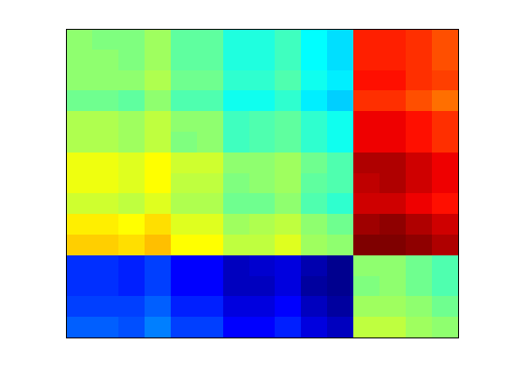
Axes Ticks & Labels
The heatmap above can be made a lot more useful with labels on the columns and rows. We can do this with two more inputs for x and y labels. The labels can be numeric or cell arrays of strings
clf heatmap(spreads_small, 1:15, labels_small);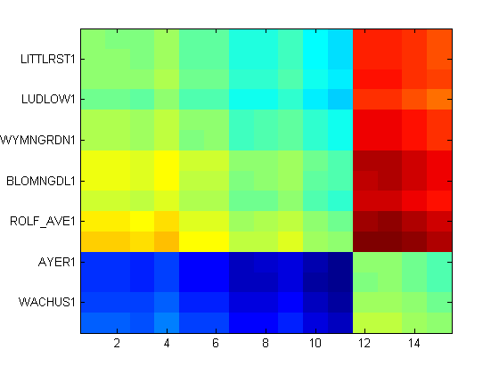
Labels on the x-axis can be rotated to prevent overlap
clf
heatmap(spreads_small, labels_small, labels_small, [], 'TickAngle', 45);
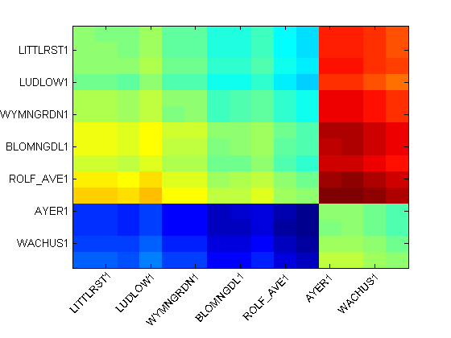 By default, for larger heatmaps, not all ticks are shown. This can be forced with the ShowAllTicks option.
clf heatmap(spreads_small, labels_small, labels_small, [], 'TickAngle', 45,... 'ShowAllTicks', true);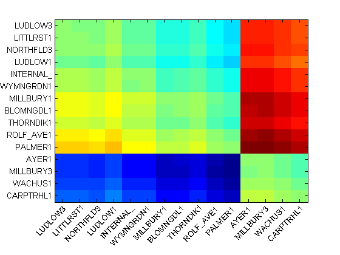
The font size of the ticks can also be controlled with the TickFontSize option. This can help when trying to fit many tick labels on a heatmap.
clf heatmap(spreads, labels, labels, [], 'TickAngle', 45,... 'ShowAllTicks', true, 'TickFontSize', 6);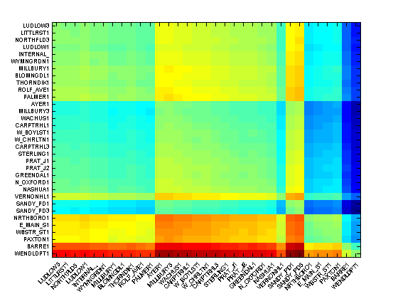
Heatmap Text Labels
The heatmap image can be overlaid with text strings to either make the heatmap more descriptive or overlay another data set. The text labels can either be just turned on, turned on with a specific format or specified as another numeric matrix or cell array of strings
Turn on text labels with a format $xx.xx. See the documentation of sprintf for more information on format strings
clf heatmap(spreads_small, labels_small, labels_small, '$%0.2f', 'TickAngle', 45);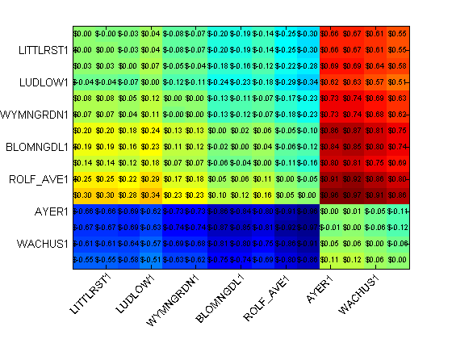
A completely different matrix of data can be shown as text labels on top of the original heatmap, enabling you to overlay another dataset
% Convert matrix c_small into a cell array of formatted strings clabel = arrayfun(@(x){sprintf('%0.2f',x)}, c_small); clf heatmap(spreads_small, labels_small, labels_small, clabel, 'TickAngle', 45);
Properties of text labels include FontSize and TextColor. TextColor can also be specified as a string 'xor' in which case a color will automatically be chosen for each label to contrast with the color on the image.
clf heatmap(spreads_small, labels_small, labels_small, '$%0.2f', ... 'TickAngle', 45, 'FontSize', 6, 'TextColor', 'w');
Zoom, Pan & Data Cursors
Heatmaps generated with heatmap are interactive, in that you can zoom and pan to explore the visualization. The tick labels will automatically update in response to zoom and pan events. Data cursors are also supported. The text shown in the data cursor is derived from the text labels used to display the data on the heatmap image.
Changing the Colormap
Heatmaps, by default, use colormap of the figure in which they are created. So changing the figure colormap will change that of the heatmap
clf
heatmap(spreads);
snapnow
colormap cool
snapnow
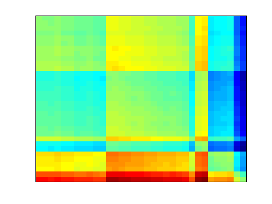 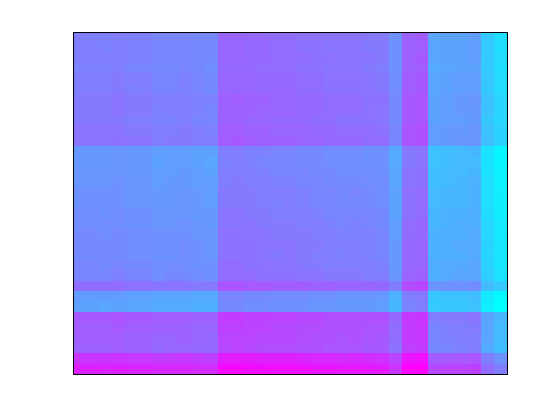 heatmap includes two custom colormaps. The colormap money displays values of 0 as white and positive and negative values as shades of green or red. The colormap red displays values of 0 as white and positive values as different shades of red. You can also use your own colormaps with the Colormap option
clf heatmap(spreads_small, [], [], '%0.2f', 'Colormap', 'money', ... 'Colorbar', true);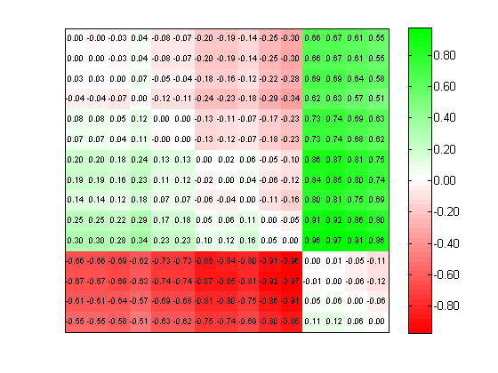
The option ColorLevels lets you increase or decrease the number of distinct colors in the colormap.
clf heatmap(spreads_small, [], [], '%0.2f', 'Colormap', 'money',... 'Colorbar', true, 'ColorLevels', 5);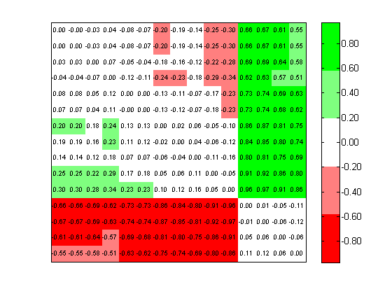
The colormap can also be constructed on a log-scale. This can be useful if your matrix values are not evenly distributed. Using a log-scale colormap will highlight the variation in the small values in your dataset.
clf heatmap(spreads_small, [], [], '%0.2f', 'TextColor', 'w', ... 'Colormap', 'copper', 'Colorbar', true); snapnow heatmap(spreads_small, [], [], '%0.2f', 'TextColor', 'w', ... 'Colormap', 'copper', 'Colorbar', true, 'UseLogColormap', true);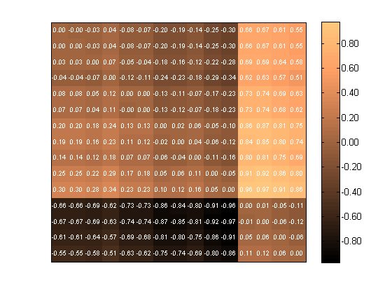 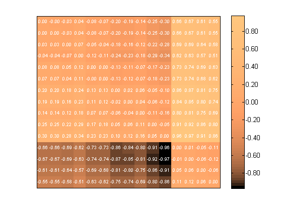
Multiple Heatmaps on a Figure
The heatmap function can be used with multiple axes in a figure, such as with the subplot command. By default they will share the colormap of the figure. The option UseFigureColormap, if set to 0 or false, will make each heatmap use a different colormap.
clf subplot(2,1,1); heatmap(spreads_small, [], [], '%0.2f', 'Colormap', 'money', ... 'UseFigureColormap', false, 'Colorbar', true); title('Money Colormap'); subplot(2,1,2); heatmap(spreads_small, [], [], '%0.2f', 'Colormap', 'copper', ... 'UseFigureColormap', false, 'Colorbar', true, 'TextColor', 'w'); title('Copper Colormap');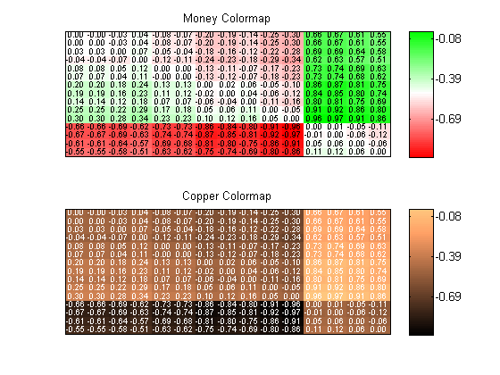
Colorbar
As seen above, a colorbar can be added to the figure using the Colorbar option. The labels for the colorbar will automatically be formatted using the formats for the text labels on the heatmap image. Notice the $ signs on the colorbar in the image below.
clf heatmap(spreads, [], [], '$%0.2f', 'Colormap', 'money', ... 'FontSize', 2, 'Colorbar', true);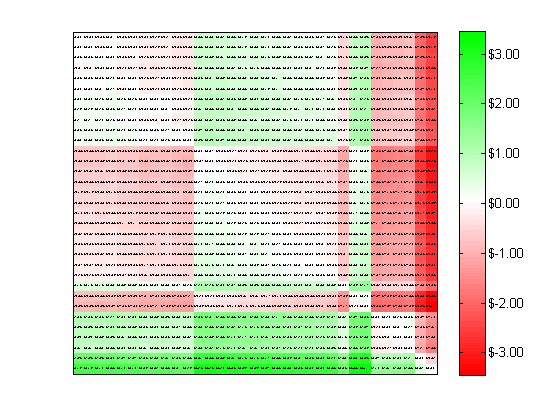
The value for the colorbar option can either be a simple true or false in which case the default colorbar will be drawn, or it can include a cell array of property-value pairs for the colorbar command.
heatmap(spreads, [], [], '$%0.2f', 'Colormap', 'money', ... 'FontSize', 2, 'Colorbar', {'SouthOutside'});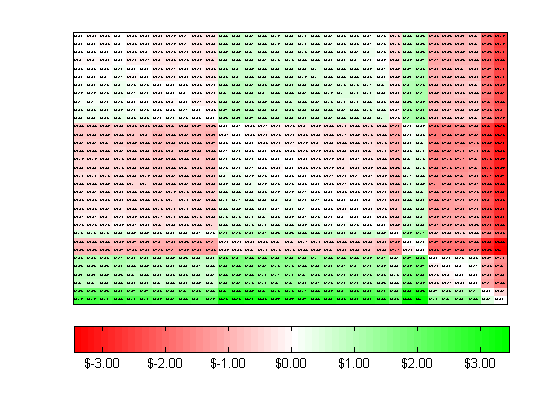
Grid Lines
Grid lines can be added with a GridLines option which is a line specification like ':' for a dotted line
clf heatmap(spreads_small, labels_small, labels_small, '%0.2f', ... 'TickAngle', 45, 'GridLines', ':');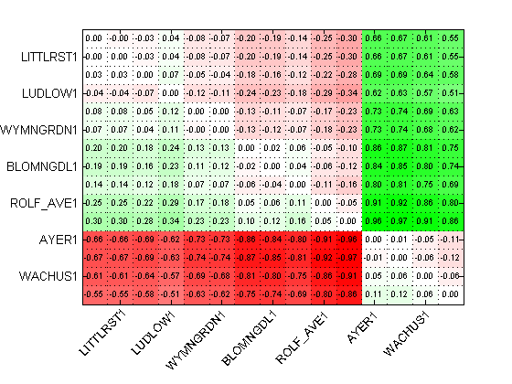